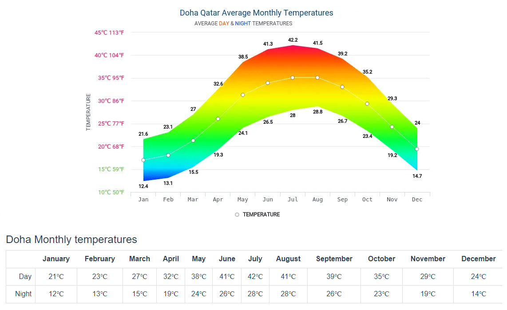

In Qatar, the summers are long, sweltering, muggy, arid, and partly cloudy and the winters are comfortable, dry, windy, and mostly clear. Over the course of the year, the temperature typically varies from 58°F to 106°F and is rarely below 51°F or above 112°F.
To know more, visit this website